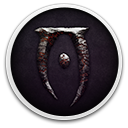

The Elder Scrolls IV: Oblivion - Game of the Year Edition DeluxeDetalhes
 |
|
| Tempo de jogo | Não Jogado |
| Última Atividade | Nunca |
| Adicionado | 07/06/2026 0:35:42 |
| Modificado | 07/06/2026 2:31:01 |
| Status de Conclusão | Not Played |
| Biblioteca | Gog |
| Fonte | GOG |
| Plataforma | PC (Windows) |
| Data de Lançamento | 16/06/2009 |
| Pontuação da Comunidade | 95 |
| Avaliação da crítica | |
| Pontuação do Usuário | |
| Gênero | Adventure Role-playing (RPG) |
| Desenvolvedor | Bethesda Game Studios |
| Editor | Bethesda Softworks |
| Funções | Single Player |
| Links | Official Website Steam Wikipedia GOG |
| Tag | |
Descrição
The following content is included in the The Elder Scrolls IV: Oblivion® Game of the Year Edition Deluxe
The Elder Scrolls IV: Oblivion® Game of the Year Edition Deluxe presents one of the best RPGs of all time like never before. Step inside the most richly detailed and vibrant game-world ever created. With a powerful combination of freeform gameplay and unprecedented graphics, you can unravel the main quest at your own pace or explore the vast world and find your own challenges.
- Fighter's Stronghold Expansion
Live the life of a noble warrior in this expansive castle with private quarters, grand dining hall, and a wine cellar. - Knights of the Nine Quest
Vanquish the evil that has been released upon the land. New dungeons, characters, quests, and mysteries await. - Shivering Isles
See a world created in Sheogorath's own image, one divided between Mania and Dementia and unlike anything you've experienced in Oblivion. - Spell Tome Treasures
Get these books and find low and high-level spells, as well as new powerful spells with multiple effects added. - Vile Lair
An underwater multilevel hideout for evil players to find refuge, providing your character with safe haven. - Mehrune's Razor
Conquer one of the deepest and most challenging dungeons in all of Cyrodiil to claim this fearsome weapon. - The Thieves Den
Uncover a famous pirate's lost ship and claim it for your own. Designed for stealth-based characters. - Wizard's Tower
In the frozen mountains of Cyrodiil stands Frostcrag Spire, a tower of wonders for your magic-oriented character. - Orrery
Harness the power of the stars. Rebuild the Orrery to unlock the secrets of this Mages Guild Inner Sanctum. - Horse Armor Pack
Tamriel is a dangerous place. Protect your horse from danger with this beautiful handcrafted armor.
The Elder Scrolls IV: Oblivion® Game of the Year Edition Deluxe presents one of the best RPGs of all time like never before. Step inside the most richly detailed and vibrant game-world ever created. With a powerful combination of freeform gameplay and unprecedented graphics, you can unravel the main quest at your own pace or explore the vast world and find your own challenges.
- Live Another Life in Another World
Create and play any character you can imagine, from the noble warrior to the sinister assassin to the wizened sorcerer. - First Person Melee and Magic
An all-new combat and magic system brings first person role-playing to a new level of intensity where you feel every blow. - Radiant AI
This groundbreaking AI system gives Oblivion's characters full 24/7 schedules and the ability to make their own choices based on the world around them. Non-player characters eat, sleep, and complete goals all on their own. - Challenging new foes
Battle the denizens of Shivering Isles, a land filled with hideous insects, Flesh Atronachs, skeletal Shambles, amphibious Grummites, and many more. - Begin a New Faction
The Knights of the Nine have long been disbanded. Reclaim their former glory as you traverse the far reaches of Cyrodill across an epic quest line.